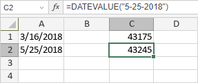

DATEVALUE funkcija
Funkcija DATEVALUE je jedna od funkcija za datum i vreme. Koristi se za vraćanje serijskog broja zadatog datuma.
Sintaksa
DATEVALUE(date_text)
Funkcija DATEVALUE ima sledeći argument:
| Argument | Opis |
|---|---|
| date_text | Datum od 1. januara 1900. do 31. decembra 9999. |
Napomene
Kako primeniti funkciju DATEVALUE.
Primeri
Prikazana slika prikazuje rezultat koji vraća funkcija DATEVALUE.
